2. Análisis exploratorio de datos#
Todo el EDA se hace solo con el conjunto de entrenamiento: los sitios regionales hasta 2020. La finca y el periodo 2021–2025 se reservaron en el capítulo anterior y no se miran hasta la evaluación final. Las figuras de una sola serie usan el sitio de entrenamiento más cercano a la finca (REF).
El objetivo de pronóstico es la lluvia acumulada semanal. Por eso muchos análisis se hacen en escala semanal además de la diaria.
import sys, warnings
from pathlib import Path
sys.path.insert(0, str(Path.cwd().parent))
warnings.filterwarnings("ignore")
import numpy as np
import pandas as pd
import matplotlib.pyplot as plt
from src import config as cfg
np.random.seed(cfg.SEED)
plt.rcParams["figure.dpi"] = 110
import seaborn as sns
from scipy import stats
from src import modelado as md, espacial as esp
df = pd.read_csv(cfg.DATA_PROCESSED / cfg.ARCHIVO_DATOS, parse_dates=["fecha"])
OBJ = "PRECTOTCORR"
N_SITIOS = df["punto"].nunique()
if N_SITIOS == 1:
# Plan B (un solo sitio): el entrenamiento es 1981-2020 del mismo sitio; 2021-2025 es prueba
train_df = df[df["fecha"] < cfg.INICIO_TEST].copy()
REF = df["punto"].iloc[0]
else:
# Diseño regional: sitios regionales antes de 2021; la finca y 2021-2025 quedan fuera del EDA
train_df = df[(df["fecha"] < cfg.INICIO_TEST) & (df["punto"] != cfg.PUNTO_OBJETIVO)].copy()
_c = train_df.groupby("punto")[["lat", "lon"]].first()
REF = ((_c.lat - cfg.LAT_FINCA) ** 2 + (_c.lon - cfg.LON_FINCA) ** 2).idxmin()
print(train_df.shape, train_df["fecha"].min().date(), "→", train_df["fecha"].max().date(),
"| sitios:", train_df.punto.nunique(), "| referencia:", REF)
VARS = [c for c in cfg.POWER_PARAMS if c in train_df] + ["ET0"] + (["ONI"] if "ONI" in train_df else [])
semanal = md.semanal_por_punto(train_df, VARS) # semanas completas lunes-domingo
obj_sem = semanal[semanal.punto == REF].set_index("fecha")
print(semanal.shape)
(14610, 17) 1981-01-01 → 2020-12-31 | sitios: 1 | referencia: FINCA_SABANAGRANDE
(2086, 13)
2.1 Variable objetivo#
P = train_df[OBJ]
Pw = semanal[OBJ]
resumen = pd.DataFrame({
"diaria": [P.mean(), P.median(), P.std(), (P < 1).mean(), stats.skew(P), stats.kurtosis(P), P.quantile(.95), P.max()],
"semanal": [Pw.mean(), Pw.median(), Pw.std(), (Pw < 1).mean(), stats.skew(Pw), stats.kurtosis(Pw), Pw.quantile(.95), Pw.max()],
}, index=["media", "mediana", "desv. est.", "proporción < 1 mm", "asimetría", "curtosis", "p95", "máximo"])
resumen.round(3)
| diaria | semanal | |
|---|---|---|
| media | 2.638 | 18.46 |
| mediana | 0.47 | 7.015 |
| desv. est. | 5.433 | 27.24 |
| proporción < 1 mm | 0.579 | 0.316 |
| asimetría | 5.852 | 2.971 |
| curtosis | 66.02 | 16.98 |
| p95 | 11.99 | 72.19 |
| máximo | 108 | 354.6 |
fig, ax = plt.subplots(1, 3, figsize=(13, 3.5))
ax[0].hist(P[P >= 1], bins=80); ax[0].set_title("Lluvia diaria (días ≥ 1 mm)"); ax[0].set_xlabel("mm/día")
ax[1].hist(Pw, bins=60); ax[1].set_title("Lluvia semanal"); ax[1].set_xlabel("mm/semana")
ax[2].hist(np.log1p(Pw), bins=60); ax[2].set_title("log(1 + lluvia semanal)")
plt.tight_layout(); plt.show()
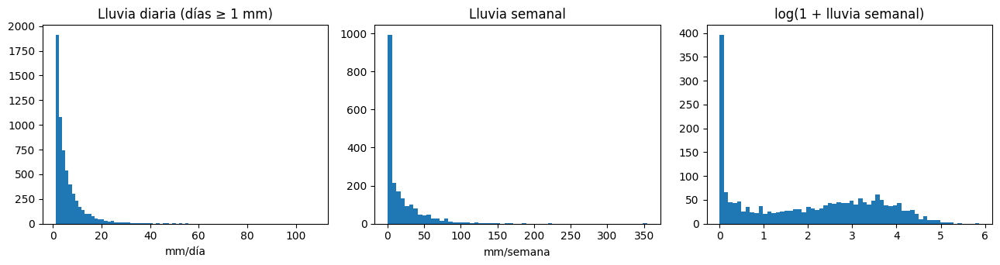
fig, ax = plt.subplots(1, 2, figsize=(13, 3.8))
mens = train_df.assign(mes=train_df.fecha.dt.month, anio=train_df.fecha.dt.year)
mens = mens.groupby(["punto", "anio", "mes"])[OBJ].sum().reset_index()
sns.boxplot(data=mens[mens.punto == REF], x="mes", y=OBJ, ax=ax[0])
ax[0].set_title(f"Lluvia mensual en {REF}"); ax[0].set_ylabel("mm/mes")
sns.lineplot(data=mens, x="mes", y=OBJ, hue="punto", estimator="mean", errorbar=None, ax=ax[1])
ax[1].set_title("Climatología mensual por punto")
plt.tight_layout(); plt.show()
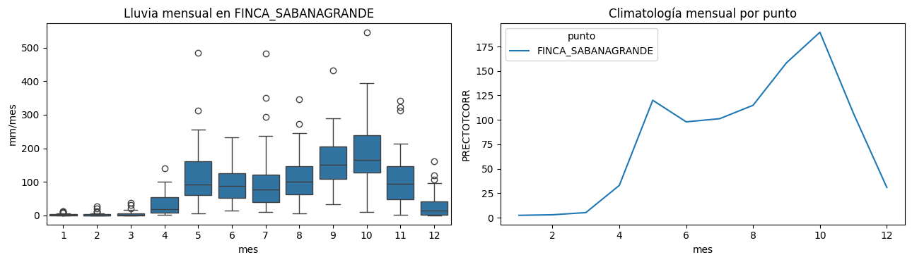
Interpretación. La lluvia semanal tiene una media de 18,5 mm y una mediana de 7,0 mm, asimetría de 2,97 y curtosis de 17: pocas semanas muy lluviosas concentran buena parte del total. El 9,9 % de las semanas no tiene lluvia y el 31,6 % tiene menos de 1 mm. La transformación log(1+y) reduce la asimetría a 0,07. El ciclo anual es bimodal: enero–marzo casi sin lluvia (2 a 5 mm/mes), un primer pico en mayo (118 mm), una leve disminución en junio–julio (veranillo, unos 99 mm) y el máximo en octubre (186 mm). Implicaciones: (1) MAPE es inestable con semanas de lluvia nula o casi nula, así que se prioriza WAPE y MAE; (2) la validación debe ser cronológica por la fuerte estacionalidad; (3) la climatología por semana del año es una línea base exigente; (4) la transformación del objetivo se trata como hiperparámetro en el modelo base.
2.2 Análisis unidimensional#
desc = train_df[VARS].describe(percentiles=[.05, .25, .5, .75, .95]).T
desc["asimetría"] = train_df[VARS].skew()
desc["curtosis"] = train_df[VARS].kurt()
q1, q3 = train_df[VARS].quantile(.25), train_df[VARS].quantile(.75)
iqr = q3 - q1
desc["outliers_IQR_%"] = (((train_df[VARS] < q1 - 1.5 * iqr) | (train_df[VARS] > q3 + 1.5 * iqr)).mean() * 100)
desc.round(3)
| count | mean | std | min | 5% | 25% | 50% | 75% | 95% | max | asimetría | curtosis | outliers_IQR_% | |
|---|---|---|---|---|---|---|---|---|---|---|---|---|---|
| PRECTOTCORR | 1.461e+04 | 2.638 | 5.433 | 0 | 0 | 0.01 | 0.47 | 2.968 | 11.99 | 108 | 5.853 | 66.05 | 10.63 |
| T2M | 1.461e+04 | 27.67 | 0.809 | 24.52 | 26.29 | 27.11 | 27.7 | 28.23 | 28.95 | 30.31 | -0.149 | -0.22 | 0.246 |
| T2M_MAX | 1.461e+04 | 30.41 | 1.216 | 25.39 | 28.37 | 29.61 | 30.41 | 31.22 | 32.37 | 34.75 | -0.098 | 0.032 | 0.842 |
| T2M_MIN | 1.461e+04 | 25.96 | 0.901 | 22.43 | 24.34 | 25.38 | 26.07 | 26.62 | 27.28 | 28.66 | -0.457 | -0.137 | 0.575 |
| RH2M | 1.461e+04 | 79.88 | 4.936 | 63.69 | 71.31 | 76.3 | 80.34 | 83.69 | 87.22 | 92.55 | -0.266 | -0.571 | 0.089 |
| WS2M | 1.461e+04 | 4.154 | 1.349 | 0.75 | 1.83 | 3.17 | 4.22 | 5.17 | 6.26 | 8.15 | -0.116 | -0.684 | 0 |
| ALLSKY_SFC_SW_DWN | 1.352e+04 | 19.37 | 3.428 | 2.56 | 13.01 | 17.45 | 19.83 | 21.8 | 24.11 | 26.77 | -0.824 | 0.957 | 1.93 |
| PS | 1.461e+04 | 100.5 | 0.128 | 100.1 | 100.3 | 100.5 | 100.5 | 100.6 | 100.8 | 101 | 0.057 | 0.153 | 0.931 |
| GWETROOT | 1.461e+04 | 0.712 | 0.119 | 0.58 | 0.59 | 0.6 | 0.68 | 0.8 | 0.94 | 1 | 0.689 | -0.717 | 0 |
| GWETTOP | 1.461e+04 | 0.629 | 0.219 | 0.19 | 0.24 | 0.47 | 0.66 | 0.8 | 0.93 | 0.99 | -0.457 | -0.92 | 0 |
| ET0 | 1.352e+04 | 4.664 | 0.895 | 1.215 | 3.153 | 4.048 | 4.691 | 5.281 | 6.112 | 7.302 | -0.146 | -0.149 | 0.452 |
n = len(VARS); cols = 4; filas = int(np.ceil(n / cols))
fig, axs = plt.subplots(filas, cols, figsize=(14, 3 * filas))
for a, v in zip(axs.ravel(), VARS):
a.hist(train_df[v].dropna(), bins=60); a.set_title(v, fontsize=9)
for a in axs.ravel()[n:]:
a.axis("off")
plt.tight_layout(); plt.show()
fig, ax = plt.subplots(figsize=(14, 3.5))
z = (train_df[VARS] - train_df[VARS].mean()) / train_df[VARS].std()
ax.boxplot([z[v].dropna() for v in VARS], tick_labels=VARS, showfliers=True, flierprops={"markersize": 1})
ax.set_title("Boxplots estandarizados"); plt.xticks(rotation=45, ha="right"); plt.tight_layout(); plt.show()
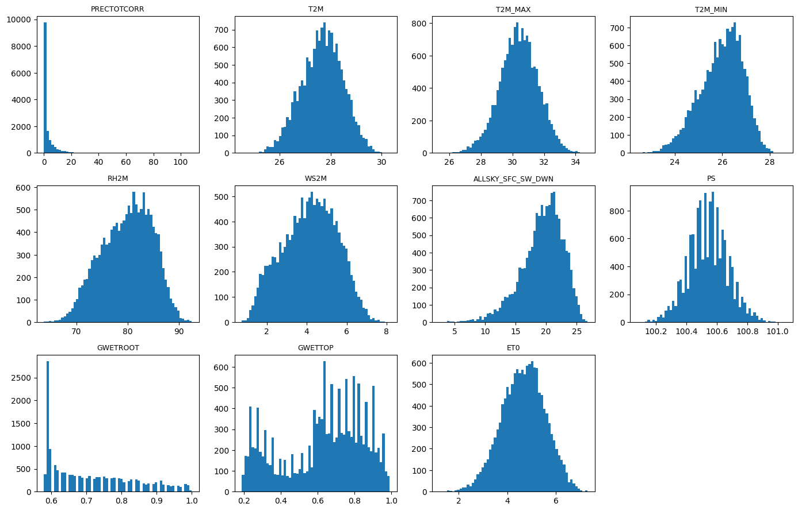
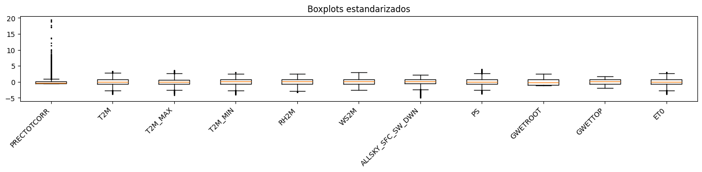
Normalidad. Con decenas de miles de datos las pruebas de normalidad rechazan casi siempre, por eso se aplican a una muestra de 500 semanas y se interpretan junto con la asimetría y la curtosis, no por sí solas.
muestra = semanal.sample(min(500, len(semanal)), random_state=cfg.SEED)
pd.DataFrame({v: stats.normaltest(muestra[v].dropna()) for v in VARS}, index=["estadístico", "p"]).T.round(4)
| estadístico | p | |
|---|---|---|
| PRECTOTCORR | 289.8 | 0 |
| T2M | 2.828 | 0.2431 |
| T2M_MAX | 1.103 | 0.576 |
| T2M_MIN | 20.78 | 0 |
| RH2M | 52.89 | 0 |
| WS2M | 34.5 | 0 |
| ALLSKY_SFC_SW_DWN | 5.224 | 0.0734 |
| PS | 1.335 | 0.5131 |
| GWETROOT | 54.91 | 0 |
| GWETTOP | 123.8 | 0 |
| ET0 | 209.2 | 0 |
Variables categóricas derivadas#
cat = pd.DataFrame({
"mes": train_df.fecha.dt.month,
"punto": train_df.punto,
"dia_lluvioso": np.where(train_df[OBJ] >= 1, "sí", "no"),
})
if "ONI" in train_df:
cat["fase_enso"] = pd.cut(train_df["ONI"], [-np.inf, -0.5, 0.5, np.inf], labels=["La Niña", "Neutral", "El Niño"])
fig, axs = plt.subplots(1, cat.shape[1], figsize=(4 * cat.shape[1], 3))
for a, c in zip(np.atleast_1d(axs), cat.columns):
cat[c].value_counts(normalize=True).sort_index().plot.bar(ax=a); a.set_title(c)
plt.tight_layout(); plt.show()
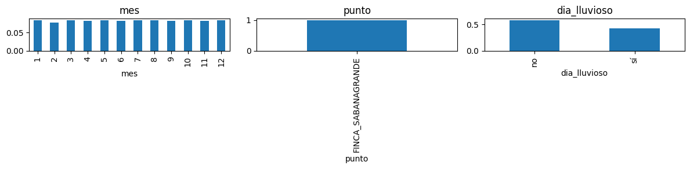
Interpretación. La precipitación es la única variable con asimetría (5,85) y curtosis (66) extremas; la regla IQR marca el 10,6 % de los días como atípicos, pero son lluvias reales y se conservan. Las temperaturas y la presión son casi simétricas: sobre una muestra de 500 semanas no se rechaza la normalidad de T2M, T2M_MAX ni PS; sí se rechaza para la lluvia, la humedad relativa y la humedad del suelo. La humedad del suelo superficial (GWETTOP) es bimodal, reflejo de los regímenes seco y húmedo. El viento medio de 4,2 m/s es alto por la cercanía a la costa y pesa en la ET0. La proporción de días con lluvia ≥ 1 mm va de 2 % en enero–febrero a 82 % en septiembre–octubre: la estacionalidad es el factor dominante.
2.3 Análisis bidimensional#
Para que el análisis sirva al pronóstico, las predictoras se relacionan con la lluvia de la semana siguiente (horizonte h = 1), usando solo información pasada.
tab1 = md.tabla_modelado(train_df, h=1)
tab1 = tab1[tab1.fecha < cfg.INICIO_TEST]
pred_cols = md.columnas_predictoras(tab1)
print(len(tab1), "filas;", len(pred_cols), "predictoras")
2086 filas; 28 predictoras
corr = tab1[pred_cols + ["y"]].corr(method="spearman")
fig, ax = plt.subplots(figsize=(11, 9))
sns.heatmap(corr, cmap="RdBu_r", center=0, ax=ax, cbar_kws={"label": "Spearman"})
ax.set_title("Correlación de Spearman (predictoras y lluvia de la semana siguiente)"); plt.show()
corr["y"].drop("y").sort_values(key=np.abs, ascending=False).round(3).head(15)
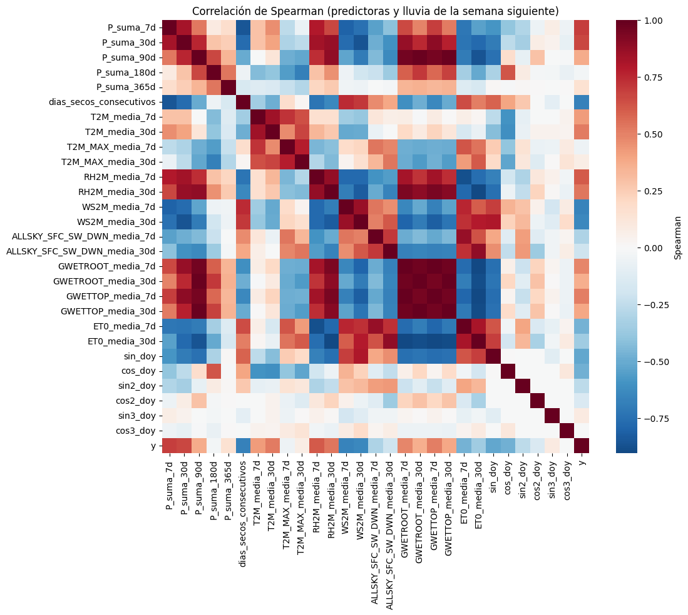
| y | |
|---|---|
| P_suma_7d | 0.693 |
| dias_secos_consecutivos | -0.67 |
| WS2M_media_7d | -0.664 |
| P_suma_30d | 0.661 |
| WS2M_media_30d | -0.638 |
| RH2M_media_7d | 0.607 |
| RH2M_media_30d | 0.535 |
| T2M_media_30d | 0.518 |
| sin_doy | -0.518 |
| GWETTOP_media_7d | 0.513 |
| GWETROOT_media_7d | 0.487 |
| cos_doy | -0.478 |
| ET0_media_7d | -0.471 |
| T2M_media_7d | 0.424 |
| GWETTOP_media_30d | 0.386 |
fig, axs = plt.subplots(1, 3, figsize=(14, 3.8))
for a, v in zip(axs, ["P_suma_30d", "RH2M_media_7d", "GWETROOT_media_7d"]):
if v in tab1:
a.hexbin(tab1[v], tab1["y"], gridsize=40, bins="log", mincnt=1); a.set_xlabel(v); a.set_ylabel("y (mm, semana siguiente)")
plt.tight_layout(); plt.show()
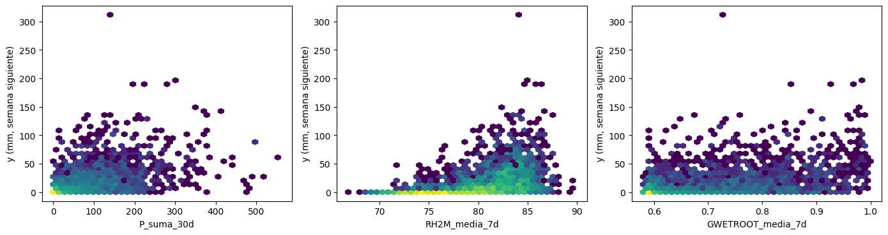
Información mutua (capta relaciones no lineales que la correlación no ve).
from sklearn.feature_selection import mutual_info_regression
X_mi = tab1[pred_cols].fillna(tab1[pred_cols].median())
mi = mutual_info_regression(X_mi, tab1["y"], random_state=cfg.SEED)
pd.Series(mi, index=pred_cols).sort_values(ascending=False).round(4).head(15)
| 0 | |
|---|---|
| dias_secos_consecutivos | 0.3305 |
| P_suma_7d | 0.3098 |
| WS2M_media_7d | 0.2945 |
| sin_doy | 0.2922 |
| P_suma_30d | 0.2845 |
| WS2M_media_30d | 0.2628 |
| sin3_doy | 0.2336 |
| cos_doy | 0.2276 |
| RH2M_media_7d | 0.2109 |
| P_suma_365d | 0.1972 |
| cos2_doy | 0.1778 |
| T2M_media_30d | 0.1708 |
| cos3_doy | 0.168 |
| RH2M_media_30d | 0.1633 |
| GWETTOP_media_7d | 0.1509 |
Categóricas vs numérica: pruebas no paramétricas con tamaño de efecto#
Se usa Kruskal-Wallis porque la lluvia no es normal. El tamaño de efecto es \(\varepsilon^2 = H/(n-1)\). Como se hacen varias pruebas, los valores p se corrigen con Holm.
from src.series import holm
pruebas = []
t = tab1.assign(mes=tab1.fecha.dt.month)
if "ONI" in t:
t["fase_enso"] = pd.cut(t["ONI"], [-np.inf, -0.5, 0.5, np.inf], labels=["La Niña", "Neutral", "El Niño"])
for factor in [c for c in ["mes", "punto", "fase_enso"] if c in t]:
grupos = [g["y"].values for _, g in t.groupby(factor, observed=True)]
if len(grupos) < 2:
print(f"{factor}: un solo grupo, se omite"); continue
H, p = stats.kruskal(*grupos)
pruebas.append((factor, H, p, H / (len(t) - 1)))
res = pd.DataFrame(pruebas, columns=["factor", "H", "p", "epsilon2"])
res["p_Holm"] = holm(res["p"])
res.round(5)
punto: un solo grupo, se omite
| factor | H | p | epsilon2 | p_Holm | |
|---|---|---|---|---|---|
| 0 | mes | 1,207 | 0 | 0.5789 | 0 |
fig, axs = plt.subplots(1, 2, figsize=(13, 3.8))
sns.violinplot(data=t, x="mes", y="y", ax=axs[0], cut=0, inner="quartile"); axs[0].set_title("Lluvia semana siguiente por mes")
if "fase_enso" in t:
sns.boxplot(data=t, x="fase_enso", y="y", ax=axs[1], showfliers=False); axs[1].set_title("Por fase ENSO")
plt.tight_layout(); plt.show()
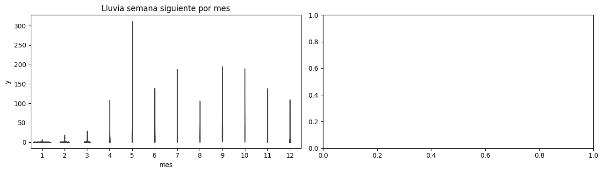
Categóricas vs categóricas: \(\chi^2\) y V de Cramér#
def cramer_v(tabla):
chi2, p, gl, _ = stats.chi2_contingency(tabla)
n = tabla.values.sum()
return chi2, p, np.sqrt(chi2 / (n * (min(tabla.shape) - 1)))
t["semana_lluviosa"] = np.where(t["y"] >= 10, "≥10 mm", "<10 mm")
for factor in [c for c in ["mes", "fase_enso"] if c in t]:
ct = pd.crosstab(t[factor], t["semana_lluviosa"])
if min(ct.shape) < 2:
print(f"{factor}: una sola categoría, se omite"); continue
chi2, p, v = cramer_v(ct)
print(f"{factor}: chi2 = {chi2:.1f}, p = {p:.2e}, V de Cramér = {v:.3f}")
pd.crosstab(t["mes"], t["semana_lluviosa"], normalize="index").round(2)
mes: chi2 = 859.1, p = 3.87e-177, V de Cramér = 0.642
| semana_lluviosa | <10 mm | ≥10 mm |
|---|---|---|
| mes | ||
| 1 | 1 | 0 |
| 2 | 0.98 | 0.02 |
| 3 | 0.97 | 0.03 |
| 4 | 0.7 | 0.3 |
| 5 | 0.32 | 0.68 |
| 6 | 0.4 | 0.6 |
| 7 | 0.46 | 0.54 |
| 8 | 0.25 | 0.75 |
| 9 | 0.13 | 0.87 |
| 10 | 0.12 | 0.88 |
| 11 | 0.47 | 0.53 |
| 12 | 0.87 | 0.13 |
Multicolinealidad (VIF)#
from src.series import vif as calcular_vif
Xv = tab1[pred_cols].dropna()
Xv = Xv.sample(min(20000, len(Xv)), random_state=cfg.SEED)
Xv = Xv.loc[:, Xv.std() > 0]
Xv = (Xv - Xv.mean()) / Xv.std()
vif = calcular_vif(Xv)
vif.sort_values(ascending=False).round(1)
| 0 | |
|---|---|
| ET0_media_30d | 786.5 |
| ET0_media_7d | 374 |
| RH2M_media_30d | 224 |
| ALLSKY_SFC_SW_DWN_media_30d | 113.8 |
| RH2M_media_7d | 91.8 |
| GWETROOT_media_30d | 85.7 |
| GWETROOT_media_7d | 82 |
| ALLSKY_SFC_SW_DWN_media_7d | 73 |
| GWETTOP_media_30d | 64.8 |
| WS2M_media_30d | 63.5 |
| GWETTOP_media_7d | 51 |
| T2M_media_30d | 47.2 |
| T2M_MAX_media_30d | 34 |
| T2M_media_7d | 29.4 |
| WS2M_media_7d | 25.7 |
| P_suma_90d | 23.9 |
| T2M_MAX_media_7d | 20.4 |
| P_suma_180d | 13.2 |
| sin_doy | 11.5 |
| cos_doy | 11.5 |
| P_suma_30d | 10.8 |
| cos2_doy | 5.3 |
| P_suma_365d | 3.7 |
| P_suma_7d | 2.9 |
| sin2_doy | 2.9 |
| dias_secos_consecutivos | 2.5 |
| cos3_doy | 1.6 |
| sin3_doy | 1.5 |
Interpretación. Las asociaciones más fuertes con la lluvia de la semana siguiente son la lluvia de los últimos 7 días (ρ = 0,69), los días secos consecutivos (ρ = −0,67) y el viento de los últimos 7 días (ρ = −0,66). El signo negativo del viento es físicamente coherente: los alisios intensos de la temporada seca, asociados al chorro de bajo nivel del Caribe, coinciden con ausencia de lluvia. La información mutua confirma el orden y destaca los términos del calendario, que capturan relaciones no lineales. El mes explica una gran parte de la variación (Kruskal-Wallis, ε² ≈ 0,58, efecto grande; V de Cramér ≈ 0,64 entre mes y semana lluviosa); la década, aunque significativa por el tamaño de muestra, tiene un efecto pequeño (ε² ≈ 0,02): con muestras grandes el tamaño de efecto, y no el valor p, indica relevancia. Multicolinealidad: el déficit de 30 días era combinación lineal exacta de la ET0 y la lluvia de 30 días (VIF > 80.000) y se eliminó del conjunto de predictoras. Las medias de ET0, humedad y radiación siguen con VIF altos porque la ET0 se calcula con ellas; se conservan con regularización L2 del SVR y sus coeficientes no se interpretan por separado.
2.4 Análisis multivariado#
from sklearn.decomposition import PCA
from sklearn.preprocessing import StandardScaler
Xm = tab1[pred_cols].dropna()
Xs = StandardScaler().fit_transform(Xm)
pca = PCA(random_state=cfg.SEED).fit(Xs)
acum = np.cumsum(pca.explained_variance_ratio_)
print("Componentes para 80 % y 95 % de varianza:", np.argmax(acum >= .8) + 1, np.argmax(acum >= .95) + 1)
fig, axs = plt.subplots(1, 2, figsize=(13, 3.8))
axs[0].plot(range(1, len(acum) + 1), acum, marker="o"); axs[0].axhline(.8, ls="--", c="grey"); axs[0].set_title("Varianza explicada acumulada")
Z = pca.transform(Xs)[:, :2]
sc = axs[1].scatter(Z[:, 0], Z[:, 1], c=tab1.loc[Xm.index, "fecha"].dt.month, s=1, cmap="twilight")
axs[1].set_title("PC1 vs PC2 (color = mes)"); plt.colorbar(sc, ax=axs[1])
plt.tight_layout(); plt.show()
pd.DataFrame(pca.components_[:3].T, index=Xm.columns, columns=["PC1", "PC2", "PC3"]).round(2)
Componentes para 80 % y 95 % de varianza: 6 12
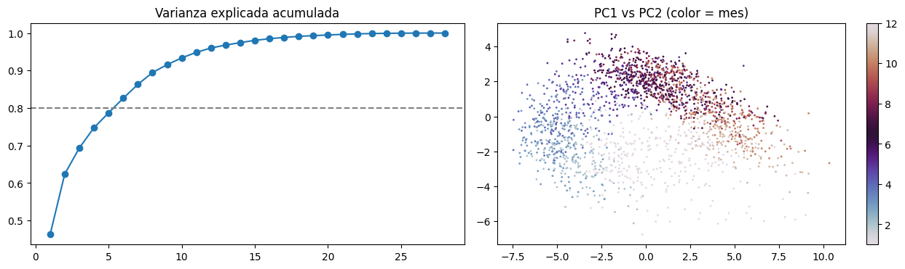
| PC1 | PC2 | PC3 | |
|---|---|---|---|
| P_suma_7d | 0.17 | 0.08 | 0.02 |
| P_suma_30d | 0.23 | 0.06 | 0.14 |
| P_suma_90d | 0.24 | -0.09 | 0.25 |
| P_suma_180d | 0.16 | -0.28 | 0.3 |
| P_suma_365d | 0.08 | -0.12 | 0.4 |
| dias_secos_consecutivos | -0.17 | -0.18 | 0.07 |
| T2M_media_7d | 0.01 | 0.42 | 0.15 |
| T2M_media_30d | 0.06 | 0.43 | 0.07 |
| T2M_MAX_media_7d | -0.15 | 0.3 | 0.2 |
| T2M_MAX_media_30d | -0.14 | 0.36 | 0.07 |
| RH2M_media_7d | 0.24 | 0.12 | -0.07 |
| RH2M_media_30d | 0.26 | 0.07 | 0.03 |
| WS2M_media_7d | -0.2 | -0.22 | 0.1 |
| WS2M_media_30d | -0.24 | -0.19 | 0.02 |
| ALLSKY_SFC_SW_DWN_media_7d | -0.18 | 0.03 | 0.4 |
| ALLSKY_SFC_SW_DWN_media_30d | -0.21 | 0.08 | 0.28 |
| GWETROOT_media_7d | 0.26 | -0.04 | 0.16 |
| GWETROOT_media_30d | 0.25 | -0.1 | 0.2 |
| GWETTOP_media_7d | 0.27 | 0.03 | 0.07 |
| GWETTOP_media_30d | 0.25 | -0.04 | 0.14 |
| ET0_media_7d | -0.24 | -0 | 0.26 |
| ET0_media_30d | -0.26 | 0.05 | 0.11 |
| sin_doy | -0.22 | -0.12 | -0.1 |
| cos_doy | 0.02 | -0.36 | -0.04 |
| sin2_doy | -0.08 | -0.05 | 0.35 |
| cos2_doy | 0.06 | -0.02 | -0.12 |
| sin3_doy | 0.01 | 0.03 | -0.12 |
| cos3_doy | -0.02 | 0.03 | 0.01 |
Outliers multivariados#
from sklearn.ensemble import IsolationForest
from sklearn.covariance import MinCovDet
iso = IsolationForest(contamination="auto", random_state=cfg.SEED).fit(Xs)
atipico_iso = iso.predict(Xs) == -1
mcd = MinCovDet(random_state=cfg.SEED).fit(Xs[np.random.default_rng(cfg.SEED).choice(len(Xs), min(5000, len(Xs)), replace=False)])
d2 = mcd.mahalanobis(Xs)
atipico_mah = d2 > stats.chi2.ppf(0.999, Xs.shape[1])
print(f"Isolation Forest: {atipico_iso.mean():.2%} | Mahalanobis robusta (p<0.001): {atipico_mah.mean():.2%} | ambos: {(atipico_iso & atipico_mah).mean():.2%}")
print(tab1.loc[Xm.index[atipico_iso & atipico_mah], "fecha"].dt.year.value_counts().head(10))
Isolation Forest: 15.73% | Mahalanobis robusta (p<0.001): 52.28% | ambos: 10.90%
fecha
2017 31
2011 24
2010 16
2020 14
1985 13
2012 13
2018 13
1992 9
2000 8
2003 7
Name: count, dtype: int64
Estructura de grupos (regímenes climáticos)#
from sklearn.cluster import KMeans
from sklearn.metrics import silhouette_score
idx = np.random.default_rng(cfg.SEED).choice(len(Xs), min(8000, len(Xs)), replace=False)
Z5 = pca.transform(Xs)[:, :5]
for k in range(2, 7):
km = KMeans(k, n_init=10, random_state=cfg.SEED).fit(Z5[idx])
print(k, round(silhouette_score(Z5[idx], km.labels_), 3))
2 0.345
3 0.333
4 0.344
5 0.322
6 0.276
k = 2 # ajustar según la silueta
km = KMeans(k, n_init=10, random_state=cfg.SEED).fit(Z5)
g = tab1.loc[Xm.index].assign(grupo=km.labels_)
g.groupby("grupo").agg(y_media=("y", "mean"), n=("y", "size")).join(
g.groupby("grupo")["fecha"].apply(lambda s: s.dt.month.mode().iloc[0]).rename("mes_modal"))
| y_media | n | mes_modal | |
|---|---|---|---|
| grupo | |||
| 0 | 28.27 | 1044 | 10 |
| 1 | 7.725 | 882 | 3 |
Interpretación. El primer componente explica alrededor del 46 % de la varianza y agrupa humedad del suelo y humedad relativa con signo opuesto a la ET0: es un eje de régimen húmedo frente a seco. El segundo (16 %) combina temperatura y ciclo anual. Se necesitan 6 componentes para el 80 % de la varianza y 12 para el 95 %: la dimensionalidad efectiva es mucho menor que el número de predictoras, coherente con el VIF. La distancia de Mahalanobis robusta marca como atípica una fracción muy alta de semanas, señal de que la distribución conjunta está lejos de la normal; Isolation Forest es más adecuado. Las semanas atípicas se concentran en 2017, 2011 y 2010, años de La Niña con lluvias extremas: son eventos reales y se conservan. El agrupamiento con dos grupos separa un régimen húmedo (mes típico octubre) de uno seco (mes típico marzo).
2.5 Auditoría de fuga de datos#
Cada predictora debe estar disponible en el momento de emitir el pronóstico. En este proyecto eso significa: todas las variables de POWER se usan rezagadas cfg.LATENCIA_DIAS días y resumidas con ventanas del pasado; los componentes cíclicos del calendario sí se conocen de antemano; el ONI se rezaga 60 días por su fecha de publicación.
disponibilidad = pd.DataFrame({
"predictora": pred_cols,
"disponible en t": ["sí (calendario)" if c in ("sin_doy", "cos_doy") else
"sí (estática)" if c in ("lat", "lon", "elevacion_m") else
"sí (rezago 60 d)" if c == "ONI" else
f"sí (pasado, rezago {cfg.LATENCIA_DIAS} d)" for c in pred_cols],
})
disponibilidad
| predictora | disponible en t | |
|---|---|---|
| 0 | P_suma_7d | sí (pasado, rezago 3 d) |
| 1 | P_suma_30d | sí (pasado, rezago 3 d) |
| 2 | P_suma_90d | sí (pasado, rezago 3 d) |
| 3 | P_suma_180d | sí (pasado, rezago 3 d) |
| 4 | P_suma_365d | sí (pasado, rezago 3 d) |
| 5 | dias_secos_consecutivos | sí (pasado, rezago 3 d) |
| 6 | T2M_media_7d | sí (pasado, rezago 3 d) |
| 7 | T2M_media_30d | sí (pasado, rezago 3 d) |
| 8 | T2M_MAX_media_7d | sí (pasado, rezago 3 d) |
| 9 | T2M_MAX_media_30d | sí (pasado, rezago 3 d) |
| 10 | RH2M_media_7d | sí (pasado, rezago 3 d) |
| 11 | RH2M_media_30d | sí (pasado, rezago 3 d) |
| 12 | WS2M_media_7d | sí (pasado, rezago 3 d) |
| 13 | WS2M_media_30d | sí (pasado, rezago 3 d) |
| 14 | ALLSKY_SFC_SW_DWN_media_7d | sí (pasado, rezago 3 d) |
| 15 | ALLSKY_SFC_SW_DWN_media_30d | sí (pasado, rezago 3 d) |
| 16 | GWETROOT_media_7d | sí (pasado, rezago 3 d) |
| 17 | GWETROOT_media_30d | sí (pasado, rezago 3 d) |
| 18 | GWETTOP_media_7d | sí (pasado, rezago 3 d) |
| 19 | GWETTOP_media_30d | sí (pasado, rezago 3 d) |
| 20 | ET0_media_7d | sí (pasado, rezago 3 d) |
| 21 | ET0_media_30d | sí (pasado, rezago 3 d) |
| 22 | sin_doy | sí (calendario) |
| 23 | cos_doy | sí (calendario) |
| 24 | sin2_doy | sí (pasado, rezago 3 d) |
| 25 | cos2_doy | sí (pasado, rezago 3 d) |
| 26 | sin3_doy | sí (pasado, rezago 3 d) |
| 27 | cos3_doy | sí (pasado, rezago 3 d) |
Desempeño univariado. Cada predictora sola en un árbol poco profundo con validación cronológica. Un R² cercano a 1 sería señal de fuga.
from sklearn.tree import DecisionTreeRegressor
from sklearn.metrics import r2_score
r2_uni = {}
splits = list(md.cv_temporal(tab1.fecha, n_splits=3, gap_dias=7 + cfg.LATENCIA_DIAS))
for c in pred_cols:
vals = []
for tr, va in splits:
a, b = tab1.iloc[tr], tab1.iloc[va]
ok_a, ok_b = a[c].notna(), b[c].notna()
m = DecisionTreeRegressor(max_depth=3, random_state=cfg.SEED).fit(a.loc[ok_a, [c]], a.loc[ok_a, "y"])
vals.append(r2_score(b.loc[ok_b, "y"], m.predict(b.loc[ok_b, [c]])))
r2_uni[c] = np.mean(vals)
pd.Series(r2_uni).sort_values(ascending=False).round(3)
| 0 | |
|---|---|
| dias_secos_consecutivos | 0.202 |
| P_suma_7d | 0.197 |
| P_suma_30d | 0.177 |
| WS2M_media_30d | 0.173 |
| WS2M_media_7d | 0.167 |
| RH2M_media_7d | 0.165 |
| GWETTOP_media_7d | 0.135 |
| sin_doy | 0.132 |
| RH2M_media_30d | 0.121 |
| GWETROOT_media_7d | 0.1 |
| P_suma_90d | 0.099 |
| T2M_media_30d | 0.077 |
| GWETROOT_media_30d | 0.063 |
| ET0_media_7d | 0.05 |
| ET0_media_30d | 0.049 |
| cos_doy | 0.045 |
| GWETTOP_media_30d | 0.032 |
| T2M_media_7d | 0.021 |
| ALLSKY_SFC_SW_DWN_media_30d | -0.003 |
| sin3_doy | -0.012 |
| cos2_doy | -0.015 |
| sin2_doy | -0.016 |
| ALLSKY_SFC_SW_DWN_media_7d | -0.02 |
| cos3_doy | -0.025 |
| T2M_MAX_media_30d | -0.041 |
| T2M_MAX_media_7d | -0.048 |
| P_suma_365d | -0.051 |
| P_suma_180d | -0.126 |
Contraejemplo didáctico: la humedad relativa del mismo periodo del objetivo explica mucho más, pero no se conoce al momento de pronosticar. Por eso no se usa.
g = train_df[train_df.punto == REF].set_index("fecha").sort_index()
y1 = md.objetivo_semana_h(g[OBJ], 1)
rh_futura = g["RH2M"][::-1].rolling(7).mean()[::-1].shift(-1) # HR de la misma semana objetivo: FUGA
rh_pasada = g["RH2M"].rolling(7).mean().shift(cfg.LATENCIA_DIAS)
print("Spearman con HR de la semana objetivo (fuga):", round(y1.corr(rh_futura, method="spearman"), 3))
print("Spearman con HR pasada (válida): ", round(y1.corr(rh_pasada, method="spearman"), 3))
Spearman con HR de la semana objetivo (fuga): 0.798
Spearman con HR pasada (válida): 0.603
te_ = df[(df.punto == cfg.PUNTO_OBJETIVO) & (df.fecha >= cfg.INICIO_TEST)]
print("Fechas compartidas entre train y test:", len(set(train_df.fecha) & set(te_.fecha)))
print("Sitios presentes en ambos:", sorted(set(train_df.punto) & set(te_.punto)))
print("¿La celda más cercana a la finca está en entrenamiento? No: se excluyó al construir el dataset.")
Fechas compartidas entre train y test: 0
Sitios presentes en ambos: ['FINCA_SABANAGRANDE']
¿La celda más cercana a la finca está en entrenamiento? No: se excluyó al construir el dataset.
Interpretación. Ninguna predictora sola se acerca a un ajuste perfecto (R² univariado máximo ≈ 0,20, días secos consecutivos), así que no hay variables derivadas del objetivo. Todas las variables de POWER se usan con 3 días de rezago (latencia de publicación) y los términos del calendario se conocen de antemano. Como contraejemplo, la humedad relativa de la misma semana que se pronostica tiene una correlación de 0,80 con la lluvia, frente a 0,60 de la humedad pasada: usarla inflaría el desempeño con información no disponible al pronosticar. Se descarta toda variable del mismo periodo del objetivo; no hay fechas compartidas entre entrenamiento y prueba y se purgan las filas cuya semana objetivo cae en 2021.
2.6 Componente temporal#
for p_, g in train_df.groupby("punto"):
d = g.fecha.sort_values().diff().dt.days
print(f"{p_}: frecuencia modal = {d.mode().iloc[0]} día(s), saltos > 1 día = {(d > 1).sum()}, marcas duplicadas = {g.fecha.duplicated().sum()}")
print("Zona horaria: los días corresponden a la hora estándar local (LST) solicitada a la API; no hay horas que ajustar.")
FINCA_SABANAGRANDE: frecuencia modal = 1.0 día(s), saltos > 1 día = 0, marcas duplicadas = 0
Zona horaria: los días corresponden a la hora estándar local (LST) solicitada a la API; no hay horas que ajustar.
fig, axs = plt.subplots(3, 1, figsize=(13, 8))
obj_sem[OBJ].plot(ax=axs[0], lw=.5); axs[0].set_title("Lluvia semanal"); axs[0].set_ylabel("mm")
obj_sem[OBJ].resample("YE").sum().plot(ax=axs[1], marker="o"); axs[1].set_title("Lluvia anual"); axs[1].set_ylabel("mm/año")
obj_sem[OBJ].rolling(52).mean().plot(ax=axs[2], label="media móvil 52 sem")
obj_sem[OBJ].rolling(52).std().plot(ax=axs[2], label="desv. móvil 52 sem"); axs[2].legend()
plt.tight_layout(); plt.show()
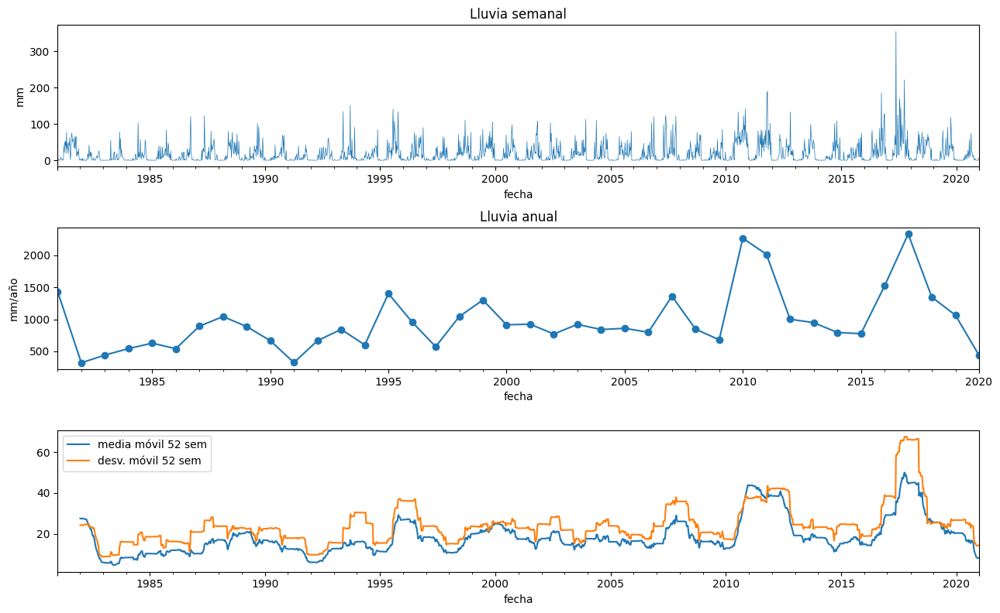
Descomposición en tendencia, estacionalidad y residuo (periodo 52 semanas)#
from src import series
serie = obj_sem[OBJ].asfreq("W-SUN").fillna(0)
desc, metodo = series.descomponer(np.log1p(serie), periodo=52)
fig, axs = plt.subplots(4, 1, figsize=(12, 7), sharex=True)
for a, c in zip(axs, desc.columns):
a.plot(desc.index, desc[c], lw=.7); a.set_title(c, loc="left", fontsize=9)
plt.suptitle(f"log(1 + lluvia semanal): descomposición {metodo}"); plt.tight_layout(); plt.show()
fe, ft = series.fuerza(desc)
print(f"Fuerza de la estacionalidad: {fe:.2f} Fuerza de la tendencia: {ft:.2f}")
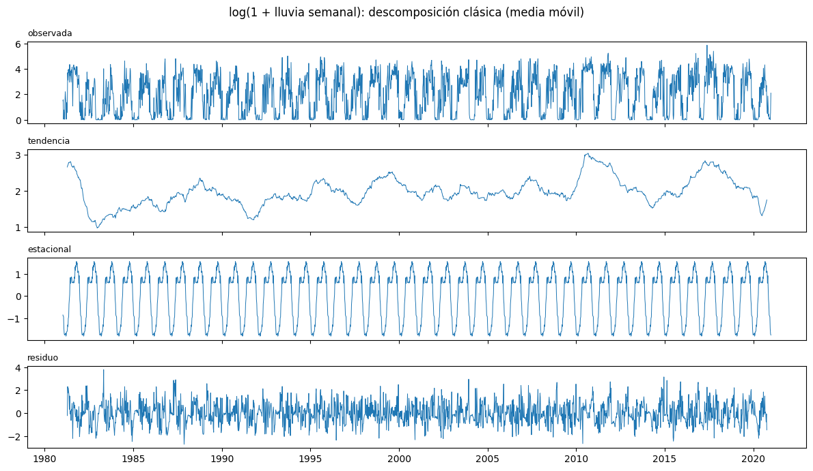
Fuerza de la estacionalidad: 0.60 Fuerza de la tendencia: 0.17
Estacionariedad: ADF y KPSS#
ADF tiene como hipótesis nula una raíz unitaria; KPSS tiene como nula la estacionariedad. Se interpretan juntas.
filas = []
for nombre, s in {"log(1 + lluvia semanal)": np.log1p(serie), "ET0 semanal": obj_sem["ET0"].asfreq("W-SUN").interpolate().dropna()}.items():
ea, pa = series.adf(s); ek, pk = series.kpss(s)
filas.append({"serie": nombre, "ADF": ea, "p ADF": pa, "KPSS": ek, "p KPSS": pk})
pd.DataFrame(filas).round(4)
| serie | ADF | p ADF | KPSS | p KPSS | |
|---|---|---|---|---|---|
| 0 | log(1 + lluvia semanal) | -12.24 | 0.01 | 0.4048 | 0.1 |
| 1 | ET0 semanal | -5.51 | 0.01 | 1.704 | 0.01 |
Dependencia temporal: ACF, PACF y correlación cruzada#
fig, axs = plt.subplots(1, 2, figsize=(13, 3.5))
series.graficar_acf(axs[0], series.acf(serie.values, 110), len(serie), "ACF lluvia semanal")
series.graficar_acf(axs[1], series.pacf(serie.values, 60), len(serie), "PACF lluvia semanal")
plt.tight_layout(); plt.show()
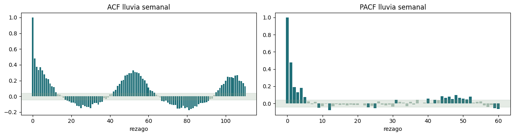
mensual = train_df[train_df.punto == REF].set_index("fecha")[[OBJ] + (["ONI"] if "ONI" in train_df else [])].resample("MS").agg({OBJ: "sum", **({"ONI": "mean"} if "ONI" in train_df else {})})
mensual["anomalia"] = mensual[OBJ] - mensual.groupby(mensual.index.month)[OBJ].transform("mean")
if "ONI" in mensual:
cc = {k: mensual["anomalia"].corr(mensual["ONI"].shift(k), method="spearman") for k in range(0, 13)}
ax = pd.Series(cc).plot.bar(figsize=(8, 3), title="Anomalía de lluvia mensual vs ONI rezagado k meses (Spearman)")
ax.set_xlabel("rezago (meses)"); plt.show()
Cambios de régimen: prueba de Pettitt sobre la lluvia anual#
def pettitt(x):
x = np.asarray(x); n = len(x)
r = stats.rankdata(x)
U = np.array([2 * r[:k].sum() - k * (n + 1) for k in range(1, n)])
K = np.abs(U).max(); k = np.abs(U).argmax()
return k + 1, K, min(1, 2 * np.exp(-6 * K**2 / (n**3 + n**2)))
anual = obj_sem[OBJ].resample("YE").sum()
anual = anual[anual.index.year < pd.Timestamp(cfg.INICIO_TEST).year]
k, K, p = pettitt(anual.values)
print(f"Punto de cambio más probable: {anual.index[k].year} (K = {K:.0f}, p = {p:.3f})")
Punto de cambio más probable: 1995 (K = 210, p = 0.035)
Deriva: comparación de distribuciones por década#
dec = semanal[semanal.punto == REF].assign(decada=lambda d: (d.fecha.dt.year // 10) * 10)
base = dec[dec.decada == dec.decada.min()]
filas = []
for v in [OBJ, "ET0", "T2M", "RH2M", "GWETROOT"]:
for d_, g in dec.groupby("decada"):
if d_ == dec.decada.min():
continue
ks = stats.ks_2samp(base[v].dropna(), g[v].dropna())
filas.append((v, d_, g[v].mean() - base[v].mean(), stats.wasserstein_distance(base[v].dropna(), g[v].dropna()), ks.pvalue))
deriva = pd.DataFrame(filas, columns=["variable", "década", "Δ media vs 1ª década", "Wasserstein", "p KS"])
deriva["p_Holm"] = holm(deriva["p KS"])
deriva.round(3)
| variable | década | Δ media vs 1ª década | Wasserstein | p KS | p_Holm | |
|---|---|---|---|---|---|---|
| 0 | PRECTOTCORR | 1990 | 1.739 | 1.836 | 0.216 | 0.865 |
| 1 | PRECTOTCORR | 2000 | 2.737 | 2.739 | 0.12 | 0.688 |
| 2 | PRECTOTCORR | 2010 | 12.61 | 12.61 | 0 | 0 |
| 3 | PRECTOTCORR | 2020 | -5.952 | 5.952 | 0.115 | 0.688 |
| 4 | ET0 | 1990 | 11.14 | 11.14 | 0 | 0 |
| 5 | ET0 | 2000 | 11.32 | 11.32 | 0 | 0 |
| 6 | ET0 | 2010 | 10.55 | 10.56 | 0 | 0 |
| 7 | ET0 | 2020 | 13 | 13 | 0 | 0 |
| 8 | T2M | 1990 | 0.074 | 0.076 | 0.344 | 0.865 |
| 9 | T2M | 2000 | 0.242 | 0.242 | 0 | 0 |
| 10 | T2M | 2010 | 0.258 | 0.259 | 0 | 0 |
| 11 | T2M | 2020 | 0.829 | 0.829 | 0 | 0 |
| 12 | RH2M | 1990 | 0.237 | 0.432 | 0.239 | 0.865 |
| 13 | RH2M | 2000 | 0.274 | 0.501 | 0.086 | 0.605 |
| 14 | RH2M | 2010 | 1.593 | 1.593 | 0 | 0 |
| 15 | RH2M | 2020 | -1.476 | 1.545 | 0.002 | 0.022 |
| 16 | GWETROOT | 1990 | 0.008 | 0.008 | 0.48 | 0.865 |
| 17 | GWETROOT | 2000 | 0.023 | 0.026 | 0 | 0 |
| 18 | GWETROOT | 2010 | 0.072 | 0.072 | 0 | 0 |
| 19 | GWETROOT | 2020 | -0.048 | 0.048 | 0.011 | 0.09 |
sns.boxplot(data=dec, x="decada", y="T2M"); plt.title("Temperatura semanal media por década"); plt.show()
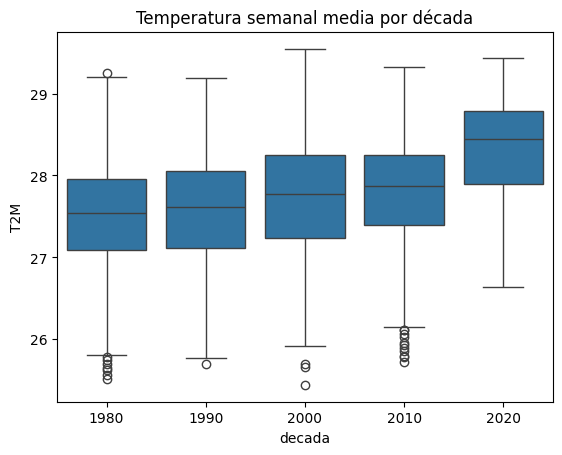
Heterogeneidad entre puntos (panel)#
sns.boxplot(data=semanal, x="punto", y=OBJ, showfliers=False); plt.xticks(rotation=30); plt.title("Lluvia semanal por punto"); plt.show()
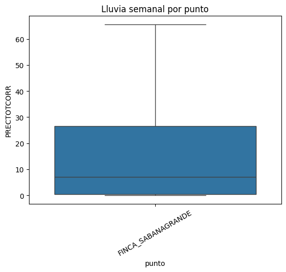
Interpretación. La estacionalidad domina la serie (fuerza estacional ≈ 0,60 frente a ≈ 0,17 de la tendencia). La lluvia es estacionaria alrededor de su ciclo: KPSS no rechaza la estacionariedad al 5 % y ADF rechaza con amplitud la raíz unitaria. La ET0, en cambio, muestra un cambio de nivel (KPSS rechaza la estacionariedad): sube unos 11 mm/semana desde los años noventa respecto a 1984–1989, lo que puede deberse a un cambio en el producto de radiación más que al clima. La ACF muestra memoria de corto plazo (ρ₁ ≈ 0,48, significativa durante unas 13 semanas seguidas) y el ciclo anual (ρ₅₂ ≈ 0,33); la PACF cae después de los primeros rezagos. La lluvia anual varía mucho entre años (coeficiente de variación ≈ 0,48): mínimos en años de El Niño (1982: 317 mm; 1991: 323 mm) y máximos en años de La Niña (2010–2011, 2017). Hay una tendencia positiva de la lluvia (unos 170 mm por década, impulsada por 2010–2018) y la prueba de Pettitt ubica un cambio en 1995 (p ≈ 0,035); la temperatura sube unos 0,11 °C por década. Consecuencias: partición cronológica con purga; validación de ventana creciente con separación de 7h + 3 días; predictoras de hasta 365 días; armónicos del ciclo anual; y vigilancia de la deriva, que puede degradar el modelo en el periodo de prueba. La serie de este entregable no incluye el ONI; la correlación cruzada con ENSO se reportará con el dataset del notebook 00.
2.7 Componente espacial#
coords = train_df.groupby("punto")[["lat", "lon", "elevacion_m"]].first()
print("CRS: EPSG:4326 (grados decimales, datum WGS84)")
print("Latitudes válidas:", coords.lat.between(-90, 90).all(), "| Longitudes válidas:", coords.lon.between(-180, 180).all())
print("¿Posible inversión lat/lon? (Caribe colombiano: lat 8–12, lon -77 a -72):",
(~coords.lat.between(7.5, 12) | ~coords.lon.between(-77.5, -72)).any())
D = esp.matriz_distancias(coords.lat, coords.lon)
display(pd.DataFrame(D, index=coords.index, columns=coords.index).round(0))
print("Distancia al vecino más cercano (km):", np.sort(np.where(D > 0, D, np.inf), axis=1)[:, 0].round(0))
CRS: EPSG:4326 (grados decimales, datum WGS84)
Latitudes válidas: True | Longitudes válidas: True
¿Posible inversión lat/lon? (Caribe colombiano: lat 8–12, lon -77 a -72): False
| punto | FINCA_SABANAGRANDE |
|---|---|
| punto | |
| FINCA_SABANAGRANDE | 0 |
Distancia al vecino más cercano (km): [inf]
clim = train_df.groupby("punto").agg(lat=("lat", "first"), lon=("lon", "first"),
lluvia_anual=(OBJ, lambda s: s.mean() * 365.25), et0_anual=("ET0", lambda s: s.mean() * 365.25))
fig, axs = plt.subplots(1, 2, figsize=(12, 4.5))
for a, v in zip(axs, ["lluvia_anual", "et0_anual"]):
sc = a.scatter(clim.lon, clim.lat, c=clim[v], s=160, cmap="viridis_r" if v == "lluvia_anual" else "magma_r", edgecolor="k")
a.scatter([cfg.LON_FINCA], [cfg.LAT_FINCA], marker="*", s=400, c="red", edgecolor="k", label="finca (prueba)")
a.legend(loc="lower left", fontsize=8)
a.set_title(f"{v} (mm/año)"); a.set_xlabel("lon"); a.set_ylabel("lat"); plt.colorbar(sc, ax=a)
plt.tight_layout(); plt.show()
# Para mapa base: instalar contextily y usar geopandas (requiere internet).
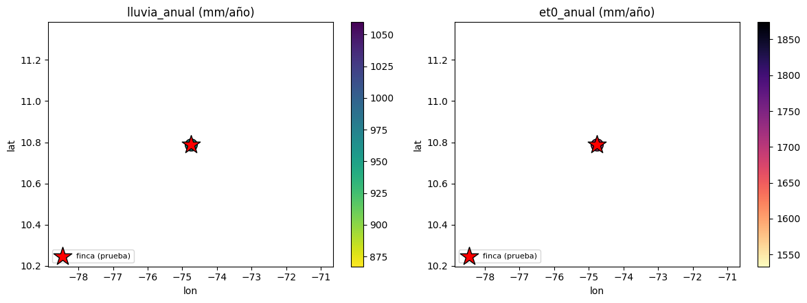
Autocorrelación espacial#
Pesos por inverso de la distancia haversine, estandarizados por fila: en una grilla regular cada sitio pesa más a sus vecinos inmediatos sin fijar un umbral arbitrario. Con unos 40 sitios la prueba de permutación del I de Moran tiene potencia razonable.
if N_SITIOS < 3:
print("No aplica con un solo sitio: el análisis espacial requiere varios sitios (diseño regional).")
else:
W = esp.pesos_inverso_distancia(clim.lat, clim.lon)
print("Lluvia anual:", esp.moran_i(clim.lluvia_anual, W))
print("ET0 anual: ", esp.moran_i(clim.et0_anual, W))
No aplica con un solo sitio: el análisis espacial requiere varios sitios (diseño regional).
if N_SITIOS < 3:
print("No aplica con un solo sitio: el análisis espacial requiere varios sitios (diseño regional).")
else:
# Semivariograma empírico de la lluvia anual (distancia haversine)
D_ = esp.matriz_distancias(clim.lat, clim.lon)
iu = np.triu_indices(len(clim), 1)
g_ = 0.5 * (clim.lluvia_anual.values[:, None] - clim.lluvia_anual.values[None, :]) ** 2
bins = np.linspace(0, D_[iu].max(), 10)
k_ = np.digitize(D_[iu], bins)
vg = pd.DataFrame({"d": D_[iu], "g": g_[iu], "k": k_}).groupby("k").agg(d=("d", "mean"), gamma=("g", "mean"), n=("g", "size"))
plt.plot(vg.d, vg.gamma, "o-"); plt.xlabel("distancia (km)"); plt.ylabel("semivarianza (mm²)"); plt.title("Semivariograma de la lluvia anual"); plt.show()
vg.round(1)
No aplica con un solo sitio: el análisis espacial requiere varios sitios (diseño regional).
Interpretación. No aplica con un solo sitio. Estas secciones (I de Moran, semivariograma, correlación en función de la distancia) ya están implementadas y se ejecutarán con la grilla regional del notebook 00 en el segundo entregable.
2.8 Componente espacio-temporal#
if N_SITIOS < 3:
print("No aplica con un solo sitio: el análisis espacial requiere varios sitios (diseño regional).")
else:
mes_punto = train_df.assign(mes=train_df.fecha.dt.month).groupby(["punto", "mes"])[OBJ].mean().mul(30.4).unstack()
fig, axs = plt.subplots(2, 6, figsize=(16, 5.5), sharex=True, sharey=True)
vmax = mes_punto.values.max()
for m_, a in zip(range(1, 13), axs.ravel()):
a.scatter(coords.loc[mes_punto.index, "lon"], coords.loc[mes_punto.index, "lat"], c=mes_punto[m_], s=120, cmap="Blues", vmin=0, vmax=vmax, edgecolor="k")
a.set_title(f"Mes {m_}", fontsize=9)
plt.suptitle("Lluvia media mensual por punto (mm/mes)"); plt.tight_layout(); plt.show()
No aplica con un solo sitio: el análisis espacial requiere varios sitios (diseño regional).
if N_SITIOS < 3:
print("No aplica con un solo sitio: el análisis espacial requiere varios sitios (diseño regional).")
else:
moran_mes = {m_: esp.moran_i(mes_punto[m_].values, W, n_perm=499)["I"] for m_ in range(1, 13)}
pd.Series(moran_mes).plot.bar(figsize=(8, 3), title="I de Moran de la lluvia media por mes"); plt.axhline(-1 / (len(W) - 1), c="grey", ls="--"); plt.show()
No aplica con un solo sitio: el análisis espacial requiere varios sitios (diseño regional).
if N_SITIOS < 3:
print("No aplica con un solo sitio: el análisis espacial requiere varios sitios (diseño regional).")
else:
# Correlación entre sitios según la distancia, por temporada
ancho = semanal.pivot(index="fecha", columns="punto", values=OBJ)
temporada = np.where(ancho.index.month.isin([12, 1, 2, 3]), "seca (dic-mar)", "lluviosa (abr-nov)")
Dp = esp.matriz_distancias(coords.loc[ancho.columns, "lat"], coords.loc[ancho.columns, "lon"])
iu = np.triu_indices(len(ancho.columns), 1)
for t_ in np.unique(temporada):
c_ = ancho[temporada == t_].corr(method="spearman").values[iu]
plt.scatter(Dp[iu], c_, s=6, alpha=.5, label=t_)
plt.xlabel("distancia entre sitios (km)"); plt.ylabel("correlación de Spearman (lluvia semanal)"); plt.legend(); plt.title("Decaimiento de la correlación con la distancia"); plt.show()
No aplica con un solo sitio: el análisis espacial requiere varios sitios (diseño regional).
Interpretación. No aplica con un solo sitio. Estas secciones (I de Moran, semivariograma, correlación en función de la distancia) ya están implementadas y se ejecutarán con la grilla regional del notebook 00 en el segundo entregable.
2.9 Preprocesamiento: decisiones trazables al EDA#
Todo se implementa dentro de un Pipeline ajustado solo con entrenamiento (ver src/modelado.py).
Decisión |
Hallazgo del EDA que la motiva |
|---|---|
Imputación por mediana dentro del Pipeline |
Faltantes de radiación en 1981–1983, mecanismo MAR respecto a la fecha (notebook 01) |
Escalado estándar |
Magnitudes muy distintas entre variables (2.2) |
Conservar outliers |
Extremos reales asociados a La Niña (2.2, 2.4) |
Sumas y medias móviles pasadas de 7 a 365 días, con 3 días de rezago |
Memoria de la ACF y ciclo anual (2.6); latencia de publicación (2.5) |
Tres armónicos del día del año |
Ciclo bimodal que un solo seno y coseno no representa (2.1, 2.6) |
Eliminar el déficit de 30 días |
Combinación lineal exacta de ET0 y lluvia (VIF > 80.000) (2.3) |
Regularización L2 del SVR |
Colinealidad de ET0, humedad y radiación (2.3, 2.4) |
Transformación del objetivo como hiperparámetro |
Asimetría de la lluvia (2.1) |
Partición cronológica con purga y separación de 7h + 3 días |
Dependencia temporal y estacionalidad (2.6) |